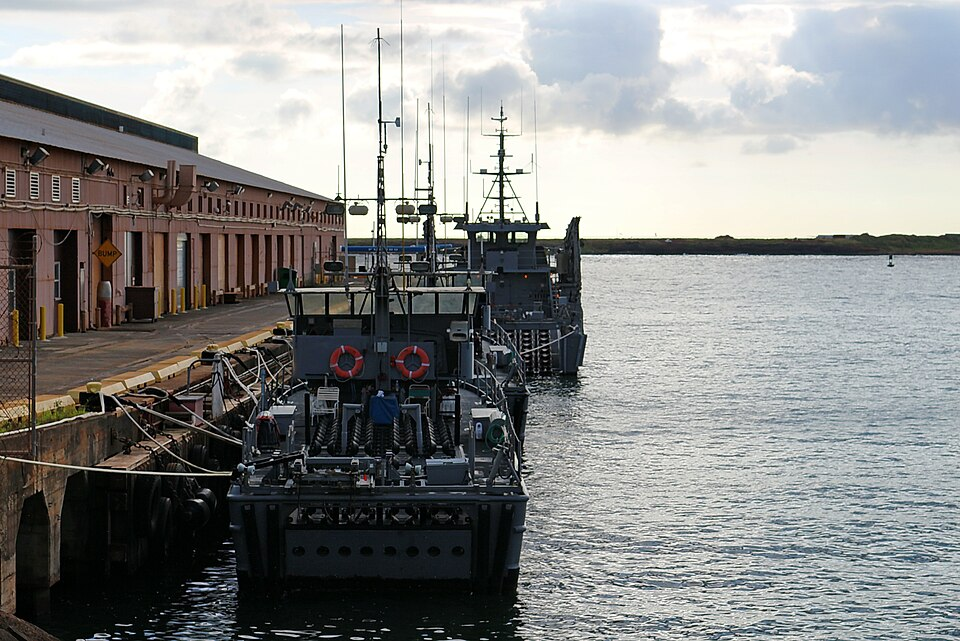

Port Allen
Place: Port Allen, Eleʻele, Kauaʻi
Type: Harbor / commercial port / historic community
Story it tells: A sugar-era harbor that transformed Kauaʻi's west side economy and today serves as both a commercial port and a launching point for Nā Pali Coast and offshore adventures.

Port Allen is the principal harbor on Kauaʻi's southwest coast, located at Hanapēpē Bay near the community of ʻEleʻele. Before a protected harbor existed, the site was known as ʻEleʻele Landing, where cargo and passengers had to be ferried through rough surf in small boats between ships anchored offshore and the shoreline. As sugar production expanded across western Kauaʻi, plantation owners sought a safer and more efficient port capable of handling larger vessels.
The harbor is named for Samuel Clesson Allen (1831–1903), a Maine-born merchant who arrived in Honolulu in 1850 and went on to co-found Allen & Robinson, one of the Kingdom of Hawaiʻi's a diverse company involved primarily with lumber, shipping, and sugar. Allen became one of the principal financial backers of harbor improvements on Kauaʻi, and on April 27, 1909, the directors of the Kauaʻi Railway Company officially renamed ʻEleʻele Landing as Port Allen in his honor. Allen never saw the harbor that bears his name, having died six years earlier in 1903.
The modern harbor was built-out over several decades. Early private improvements supported plantation shipping, while federal construction between the 1930s and 1948 added a massive concrete breakwater and deepened the harbor to protect vessels from the powerful south swells and muddy outflow of the Hanapēpē River. The result was a safe commercial port that became one of the island's primary outlets for sugar exports throughout the twentieth century.
Port Allen also occupies an important place in Hawaiʻi's aviation history. The adjacent airfield, originally known as Burns Field, welcomed Kauaʻi's first scheduled commercial airline service in 1929 when Inter-Island Airways—later Hawaiian Airlines—began regular flights to the island. It was also where future aviation pioneer Bertram J. "Jimmy" Hogg began his career before eventually lending his initials to Maui's Kahului Airport code, OGG.
Today, Port Allen continues to serve commercial vessels, fishing boats, and harbor operations while also functioning as the primary departure point for many Nā Pali Coast cruises, snorkeling tours, whale watching excursions, and sport fishing charters. Although whalers and sugar ships no longer dominate the waterfront, the harbor remains one of Kauaʻi's most important maritime gateways, linking the island's plantation past with its modern visitor economy.